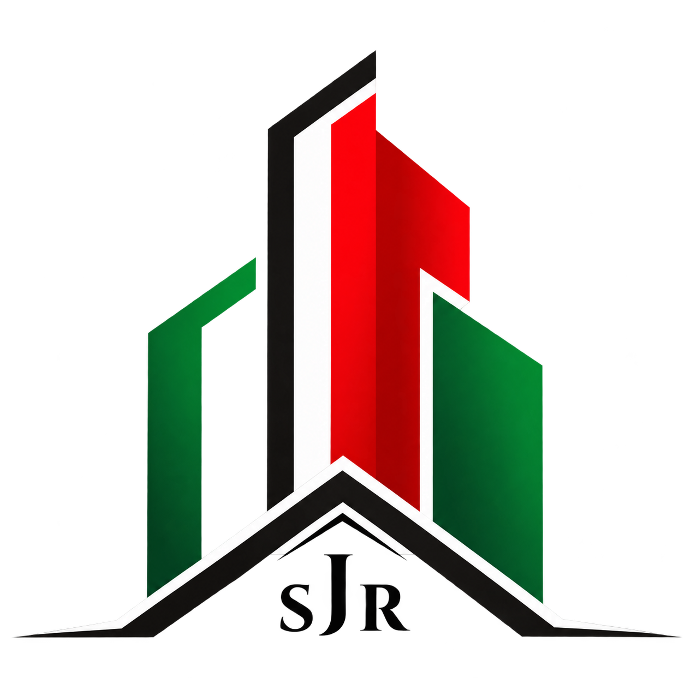
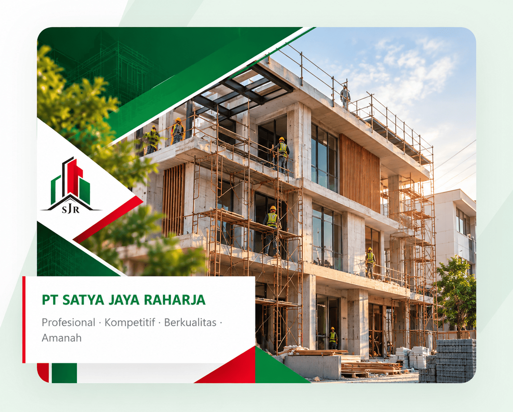
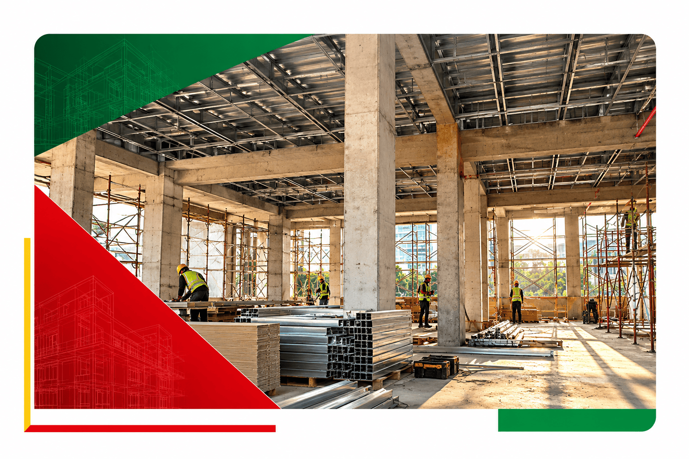
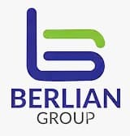
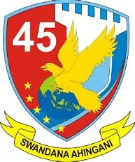
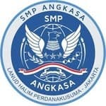
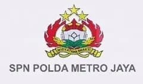
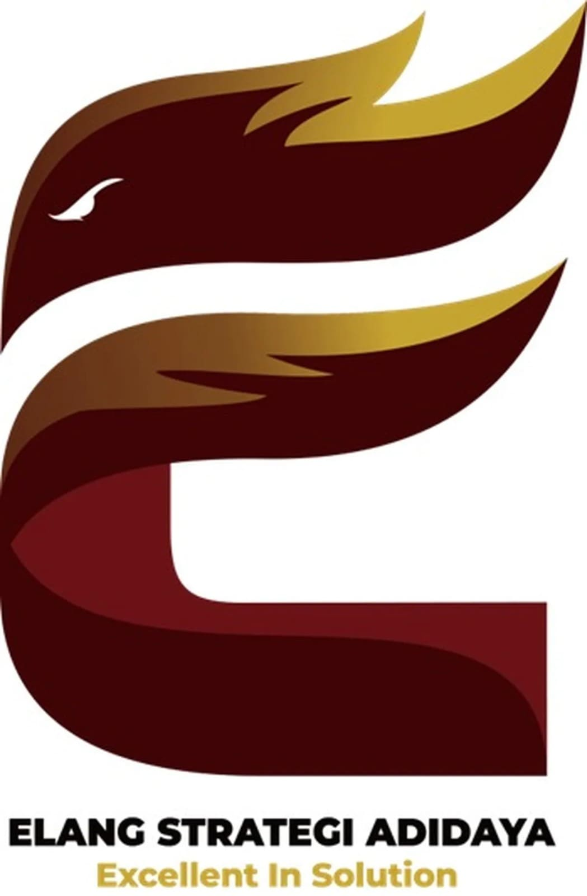

Construction · Interior · Exterior
PT SATYA JAYA RAHARJA
Membangun dengan kualitas, bekerja dengan amanah.
Solusi konstruksi profesional untuk setiap kebutuhan proyek Anda.
Profesional · Kompetitif · Berkualitas · Amanah

Construction · Interior · Exterior
Membangun dengan kualitas, bekerja dengan amanah.
Solusi konstruksi profesional untuk setiap kebutuhan proyek Anda.
Profesional · Kompetitif · Berkualitas · Amanah
PT Satya Jaya Raharja adalah perseroan kontraktor bersertifikasi SBU LPJK resmi yang melayani pembangunan gedung komersial, hunian residensial bertingkat, renovasi struktur, serta desain interior & eksterior berstandar teknis presisi.


PT Satya Jaya Raharja didirikan sebagai perseroan penyedia jasa konstruksi terpadu yang berfokus menghadirkan mutu bangunan berdaya tahan lama, efisiensi anggaran terukur, dan kemudahan komunikasi bagi setiap pemilik proyek.
Kami tidak hanya membangun struktur beton dan baja, namun juga membina hubungan kemitraan jangka panjang atas dasar keterbukaan, ketepatan waktu serah terima, dan penciptaan lapangan kerja produktif bagi tenaga kerja konstruksi Indonesia.
Mendiskusikan denah, rancangan anggaran biaya (RAB), dan pemilihan material secara transparan sebelum kontrak ditandatangani.
Penyampaian laporan progres lapangan berkala dan penanganan cepat kendala teknis oleh Site Engineer yang bertugas.
Hasil pekerjaan presisi dengan toleransi teknis ketat, material bersertifikat SNI, dan garansi pemeliharaan tertulis.
Dukungan menyeluruh mulai dari perencanaan struktur, pengadaan material bersertifikat SNI, hingga pekerjaan *finishing* interior & eksterior presisi.
 BG001 · Hunian
BG001 · Hunian
Pembangunan rumah tinggal eksklusif, villa, perumahan cluster, dan rumah kos bertingkat dengan struktur beton bertulang standar gempa.
 BG002 · Perkantoran
BG002 · Perkantoran
Pembangunan ruko, gedung perkantoran, dan sentra bisnis dengan efisiensi tata ruang modern serta integrasi MEP komprehensif.
 BG006 · Pendidikan
BG006 · Pendidikan
Pembangunan ruang kelas, asrama, dan fasilitas yayasan dengan standar sirkulasi udara sehat, pencahayaan alami, dan akustik ruang optimal.
 KBLI 43304 · Interior
KBLI 43304 · Interior
Pekerjaan penataan ruang, custom furniture, kitchen set, partisi akustik HPL/kaca, serta plafon artistik dengan visualisasi 3D sebelum pelaksanaan.
 KBLI 43305 · Eksterior
KBLI 43305 · Eksterior
Transformasi wajah bangunan dengan panel ACP Seven, kisi-kisi aluminium wood-grain, batu alam proteksi, dan kanopi *cantilever* kaca tempered.
 Struktur & Rehab
Struktur & Rehab
Suntik kolom beton, perkuatan pondasi eksisting, cor dak bertulang, perbaikan atap bocor, dan peremajaan tata ruang tanpa mengorbankan keamanan struktur.
 Fabrikasi Logam
Fabrikasi Logam
Fabrikasi bengkel las bersertifikasi untuk pembuatan pagar tempa/minimalis, kanopi bentang lebar, tangga putar, dan mezzanine baja.
 Aluminium Presisi
Aluminium Presisi
Pemasangan kusen aluminium Alexindo / YKK, pintu lipat/sliding kedap suara, jendela casement, serta partisi pembatas ruangan kantor.
 Infrastruktur
Infrastruktur
Pekerjaan perkerasan jalan lingkungan, area parkir komersial, drainase U-ditch, dan paving block K-300 yang mampu menahan beban kendaraan berat.
Kompas moral dan profesionalisme seluruh jajaran direksi, staf teknik, hingga tim lapangan PT Satya Jaya Raharja.
Menjadi perusahaan konstruksi yang profesional, kompetitif, berkualitas tinggi, berintegritas amanah, serta memberikan kemanfaatan seluas-luasnya bagi masyarakat dan pembangunan nasional.
Bukti komitmen pengerjaan tepat waktu, spesifikasi teknis sesuai SPK, dan transparansi anggaran bernilai miliaran rupiah.
Pemberi Kerja: Bpk. Afrizal · Jatinangor, Jawa Barat
Pekerjaan konstruksi struktur bertingkat menyeluruh (*Design & Build*) mencakup pondasi telapak, 28 kamar tidur dengan kamar mandi dalam, instalasi air bersih/kotor mandiri, sistem kelistrikan terpusat, dan pagar perimeter keamanan.
Bpk. Kolonel Didi Subandi · Bekasi, Jawa Barat
PT Berlian Cipta Boga · Depok, Jawa Barat
Bpk. Fakih · Utan Kayu, Matraman, Jakarta Timur
Mayor Nuragil · Halim Perdanakusuma, Jakarta Timur
Yayasan Nurul Ikhlas · Depok, Jawa Barat
Skadron Udara 31 · Lanud Halim Perdanakusuma
Kerja sama berkesinambungan bersama instansi militer, kepolisian, swasta nasional, dan institusi pendidikan.

Berlian Group
Skadron Udara 45
SMP Angkasa
SPN Polda Metro
PT ESASeluruh peralatan berada dalam kepemilikan operasional mandiri dan kondisi prima terkalibrasi untuk menjamin kelancaran pekerjaan tanpa kendala sewa.
Pemisahan fungsi pengawasan strategis, kepemimpinan operasional, dan keahlian teknis lapangan yang tersertifikasi.
Klien memiliki rasa aman dan kepastian hukum penuh melalui kepemilikan dokumen izin usaha konstruksi Republik Indonesia yang lengkap dan masih berlaku.
2602260121291
Berlaku efektif untuk seluruh kegiatan operasional konstruksi gedung dan perumahan di Indonesia.Akta No. 10 · 21 Okt 2025
Dibuat di hadapan Notaris Amanda Tasya, S.H., M.Kn. dengan status badan hukum Perseroan Terbatas sah.BG001 · BG002 · BG006
Kualifikasi resmi untuk Gedung Hunian, Gedung Perkantoran, serta Gedung Pendidikan dan Fasilitas Sosial.1000 00000 0678 2448
Terdaftar tertib perpajakan dengan fasilitas faktur pajak resmi bagi klien institusi/BUMN.41011 · 41012 · 43304 · 43305
Mencakup konstruksi gedung residensial, non-residensial, dekorasi interior, dan penataan eksterior.Pembayaran Termin Fisik
Sistem pembayaran bertahap sesuai progres aktual lapangan dengan masa pemeliharaan retensi.Pratinjau berkas dokumen asli (25 halaman). Klik halaman mana saja untuk memperbesar dengan tampilan viewer galeri.
Alamat kantor operasional PT Satya Jaya Raharja di Ratujaya, Cipayung, Kota Depok.
Jl. H. Nurdin RT 005/RW 007, Kel. Ratujaya, Kec. Cipayung, Kota Depok, Jawa Barat
Buka Petunjuk Arah ↗Sampaikan spesifikasi pekerjaan, jadwal survei lokasi, atau estimasi rancangan anggaran biaya (RAB) bersama tim kami.
Jadwal survei, negosiasi estimasi biaya, dan ketentuan pekerjaan dapat dibahas langsung secara transparan.
Lengkapi rincian proyek dalam 3 langkah mudah. Tim estimator kami siap memberikan estimasi awal & konsultasi gratis.